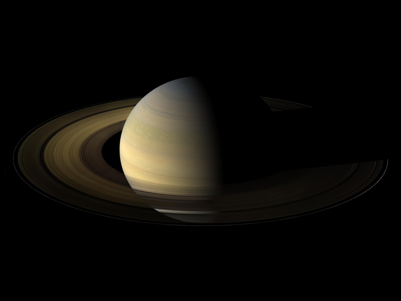

Szaturnusz
Áttekintés
A Szaturnusz a hatodik bolygó a Naptól számítva, és a második legnagyobb bolygó Naprendszerünkben.
A több ezer gyönyörű gyűrűvel díszített Szaturnusz egyedülálló a bolygók között. Nem ez az egyetlen bolygó, amelynek gyűrűi vannak – jég- és szikladarabokból –, de egyik sem olyan látványos vagy bonyolult, mint a Szaturnuszé.
A Jupiter másik gázóriásához hasonlóan a Szaturnusz is egy hatalmas golyó, amely többnyire hidrogénből és héliumból áll.
Amit érdemes tudni...
- Kilenc Föld egymás mellett majdnem átfogná a Szaturnusz átmérőjét. Ez nem tartalmazza a Szaturnusz gyűrűit.
- A Szaturnusz a hatodik bolygó a Napunktól (csillagtól) számítva, és körülbelül 1,4 milliárd kilométerre kering a Naptól.
- A Szaturnusznak körülbelül 10,7 órát vesz igénybe (senki sem tudja pontosan), hogy egyszer megforduljon a tengelye körül – ez a Szaturnusz egy „napja” –, és 29 földi év kell ahhoz, hogy megkerülje a Napot.
- A Szaturnusz gáz-óriásbolygó, ezért nincs olyan szilárd felszíne, mint a Földnek. De lehet, hogy valahol szilárd magja van.
- A Szaturnusz légköre nagyrészt hidrogénből (H2) és héliumból (He) áll.
- A Szaturnusznak 53 ismert holdja van, és további 29 hold várja felfedezésük megerősítését – ez összesen 82 hold.
- A Szaturnusznak van a leglátványosabb gyűrűrendszere, hét gyűrűvel és közöttük számos rés és felosztás van.
- Kevés küldetés látogatta meg a Saturnuszt: a Pioneer 11 és a Voyagers 1 és 2 repült el mellette; De a Cassini 2004 és 2017 között 294 alkalommal keringett a Szaturnusz körül.
- A Szaturnusz nem tudja fenntartani az általunk ismert életet, de a Szaturnusz egyes holdjain olyanok a feltételek, amelyek támogathatják az életet.
- Körülbelül két tonna a Szaturnusz tömegéből a Földről származik: a Cassini űrszondát szándékosan elpárologtatták a Szaturnusz légkörében 2017-ben.
Pár fun fact
| Tulajdonság | Szaturnusz | Föld |
|---|---|---|
| Távolsága a naptól (AU) | 9.58 | 1.00 |
| Orbitális periódus (nap) | 10,759 | 365.25 |
| Átmérő (km) | 116,460 | 12,742 |
| Átlagos felszíni hőmérséklet (°C) | -140 | 14 |
| Holdjainak száma | >53 (+29?) | 1 |
| Légkör | Vastag, főleg hidrogénből és héliumból áll | Főleg nitrogénból és oxigénből áll |
| Mágneses mező | A Jupiter után a legerősebb és legkiterjedtebb | Erős és rendkívül kiterjedt |